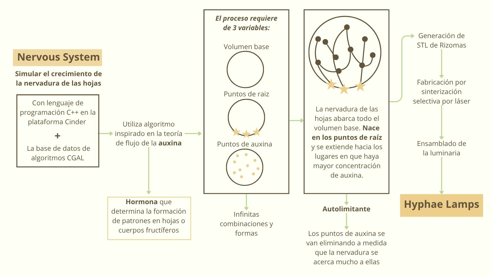

¿Qué es?
Las Hyphae Lamps son una serie de lámparas generativas inspiradas en la forma en que se desarrollan las venas de las hojas. Cada pieza es única, cultivada digitalmente mediante simulación computacional y fabricada con impresión 3D. Los accesorios LED de bajo consumo proyectan sombras ramificadas, creando una atmósfera orgánica y ligera.
¿Cómo funcionan?
Las lámparas se cultivan en un software de diseño personalizado que creamos en C++ usando CGAL. La red de ramificación evoca hojas, coral y raíces sin replicar con precisión ninguna forma natural. Cada lámpara comienza desde un volumen base y un conjunto de puntos de raíz; la estructura emerge a través de un proceso iterativo a medida que las raíces crecen en un entorno lleno de auxina.
Biomímesis
El proyecto se enmarca en la biomímesis, entendida como el estudio y aplicación de los principios funcionales de la naturaleza para resolver problemas de diseño. Más allá de reproducir una forma natural, Hyphae Lamps emula los procesos de crecimiento, trasladando el comportamiento de las células vegetales al lenguaje del algoritmo.
"No hay dos lámparas iguales"
Cada hoja tiene sus propias peculiaridades: entre las especies, los patrones difieren drásticamente; pueden ser radiales como un lirio, paralelos como una brizna de hierba o reticulados como una cáscara de tomatillo.
Eficiencia
Las lámparas se cultivan digitalmente mediante un software creado en C++ con CGAL y Cinder. Cada lámpara:
- Ilumina mediante un conjunto de 3 LED Cree.
- Consume solo 3,6 W de electricidad.
- Su vida útil estimada supera las 50.000 horas (casi 6 años de uso continuo).


Colonización del espacio
Proceso de crecimiento iterativo de redes de líneas ramificadas basado en la distribución de fuentes de auxina que atraen las líneas, evocando patrones de expansión vegetal.
Hyphae Lamps representa la fusión entre mundos que parecían distantes. La observación se volvió clave bajo la metodología del diseño: cómo crece, se adapta y se organiza la vida para ser abstraída y traducida a nuevos lenguajes visuales. Sencillez y sensibilidad en un proyecto digital que evoca un proceso vivo, generando entre luces y sombras un ambiente que entrega confort y curiosidad ante lo orgánico y cotidiano que suele pasar desapercibido. Finalmente, busca reflexionar sobre la belleza existente en los patrones naturales y cómo el ser humano puede colaborar con la naturaleza sin invadirla.